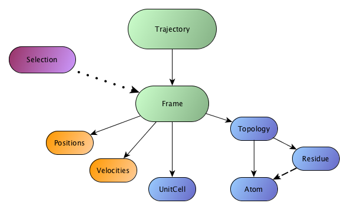

This figure represents how the basic classes of chemfiles are organised and how
they interact together. The only classes a chemfiles user should worry about are
the Trajectory, Frame, Topology, Residue, Atom, UnitCell
and Selection. All of these are described in this section.
They are various way of interacting with these classes, all of them being described in the Classes and functions reference section for the C++ interface.
A Trajectory is the main entry point of chemfiles. It reads one or many
Frame from a file on the disk using a specific format. The file type and the
format are automatically determined from the extention.
A Frame holds data for one step of a simulation, consisting in the positions
for all the atoms; optionally the velocities for all the atoms; the Topology
and the UnitCell of the system.
The Topology describes the organisation of the particles in the system. It
contains a list of Atom in the system, and informations about which atoms
are bonded together. A Residue is a group of atoms bonded together, which
may or may not corresponds to molecules. When working with bio-molecules and
specifically proteins from the PDB data bank, the residues should correspond to
amino-acids in the protein.
The Atom class contains basic information about the atoms in the system: the
name (if it is available), mass, kind of atom and so on. Atoms are not limited
to plain chemical elements.
The UnitCell class describes the boundary conditions of the system: where are
the boundaries, and what is the periodicity of theses boundaries. An unit cell
can be of three types: Infinite, Orthorombic or Triclinic. Infinite cells
do not have any boundaries. Orthorombic cells are defined by three orthogonals
vectors, and triclinic cells are defined by three vectors without any
constrain.
Chemfiles also provides a selection language,
implemented in the Selection class. This selection language allows the users
to select a group of atoms from a Frame using a selection string. Examples
of selections strings are "name H" and "(x < 45 and name O) or name C".